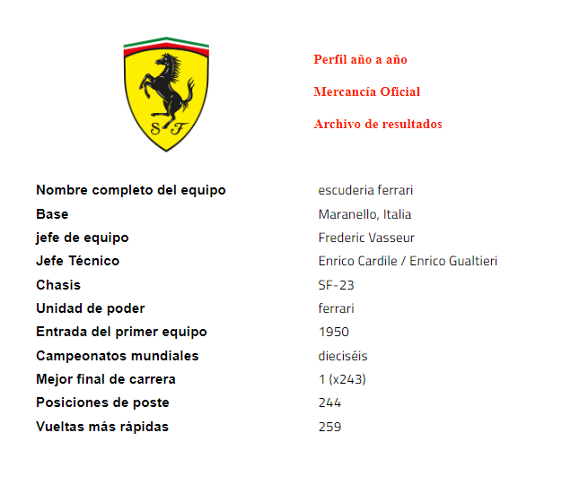
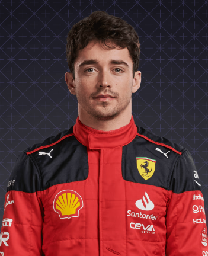
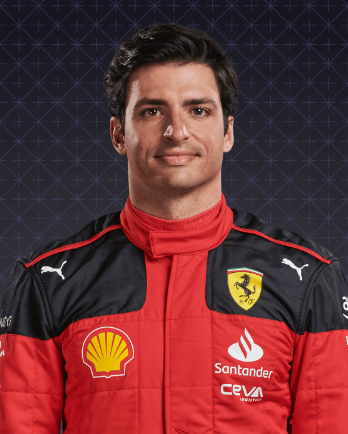

Ferrari

En perfil
Para muchos, Ferrari y la Fórmula 1 se han vuelto inseparables. El único equipo que ha competido en todas las temporadas desde que comenzó el campeonato mundial, el Cavallino Rampante ha crecido a partir del humilde sueño del fundador Enzo Ferrari para convertirse en una de las marcas más icónicas y reconocidas del mundo. El éxito llegó rápidamente a través de gente como Alberto Ascari y John Surtees, y continuó, en tiempos difíciles, con Niki Lauda en la década de 1970 y luego con Michael Schumacher en la década de 2000, cuando Ferrari obtuvo cinco títulos consecutivos sin precedentes, cinco títulos dobles, asegurando su estatus como el equipo más exitoso y condecorado en la historia de la F1...
2022
Encabeza la carrera por el título a principios de temporada, con Charles Leclerc ganando dos de las tres carreras iniciales. Sin embargo, la combinación de errores del conductor, problemas de confiabilidad y pasos en falso en la estrategia finalmente los envía a un lejano segundo lugar detrás de Red Bull. Carlos Sainz logra la primera victoria de su carrera, en Silverstone.
2021
Todavía no hay señales de un desafío por el título, pero la fuerte mejora año tras año los eleva por encima de McLaren para P3 en general, con más del doble de puntos que en 2020. El recién llegado Carlos Sainz supera a Charles Leclerc, el español logra cuatro podios frente a uno de su compañero de equipo.
2020
Sumérgete en su peor desempeño en cuatro décadas, sin poder ganar una carrera, logrando solo tres podios y cayendo al sexto lugar en la clasificación. A Sebastian Vettel se le dice desde el principio que su contrato no se renovará para 2021, y es Charles Leclerc quien asegura 98 de los 131 puntos del equipo.
2019
El patrón de los últimos años continúa, ya que no logran ganar una carrera hasta el GP de Bélgica de agosto, a pesar de ser claros favoritos en la pretemporada y, a menudo, tener el auto más rápido. Una rivalidad tensa (ya veces costosa) hace que el recién llegado Charles Leclerc supere al veterano compañero de equipo Sebastian Vettel, con dos victorias contra una del cuatro veces campeón.
Pilotos

Carlos Leclerc

Carlos sainz